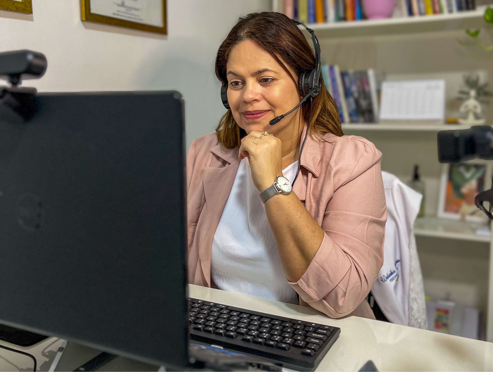

EU TRABALHO COM
Tratamento para Ansiedade
Tratamento para a Depressão
Tratamento para Transtornos de Humor
Relacionamentos
Sexualidade
Autoconhecimento
Outros
BARRAS DE ACCESS COM OLHAR PSICANALÍTICO
Como psicanalista e praticante de Barras de Access, acredito que o cuidado verdadeiro acontece quando olhamos para a pessoa em sua totalidade: corpo, mente e emoção.
O que é a técnica?
As Barras de Access são uma técnica corporal que trabalha por meio de toques suaves em 32 pontos específicos da cabeça, cada um ligado a áreas importantes da vida, como alegria, criatividade, autoconfiança, abundância e relações. Esses pontos armazenam memórias, crenças e padrões de pensamento que muitas vezes nos limitam sem que percebamos.
Como funciona a sessão?
Durante a sessão, você é convidada(o) a deitar-se confortavelmente e apenas receber. Esse simples gesto de entrega abre espaço para liberar tensões, reorganizar pensamentos e acessar um estado de presença mais leve e consciente.
Quais os benefícios?
Na minha prática, percebo que as Barras podem potencializar processos de autoconhecimento, ajudando na diminuição da ansiedade, no alívio do estresse, na melhora do sono e no fortalecimento da autoestima. Muitos relatam mais clareza mental, motivação para agir e um sentimento renovado de confiança na vida.
A conexão com a Psicanálise
O que mais me encanta nesta técnica é como ela dialoga com a psicanálise: assim como no processo de análise, nas Barras damos espaço para que conteúdos inconscientes sejam ressignificados, mas de forma corporal e energética. É como se o corpo também tivesse voz nesse processo de libertação.
Vale lembrar que esta prática é complementar, não substituindo tratamentos médicos ou psicológicos. Meu objetivo é oferecer um espaço de acolhimento onde você possa se reconectar consigo mesma(o) e abrir novas possibilidades para viver com mais leveza e autenticidade.
TERAPIA PRESENCIAL
Como é a terapia presencial?
O paciente deve se deslocar até o consultório da psicanalista em um horário previamente combinado. As sessões costumam durar de 40 até 60 minutos. No meu consultório você vai encontrar o divã, que é o dispositivo que uso para atender na abordagem psicanalítica.
Você pode marcar uma primeira consulta comigo para entender se a terapia presencial é adequada para você neste momento.
TERAPIA ON-LINE
Recomendo esta modalidade de terapia para quem deseja estar no conforto de sua casa ou enquanto estão em viagem. A terapia online pode ser uma boa opção caso você tenha uma agenda muito ocupada ou realize muitas viagens, se você tiver alguma restrição que o (a) impeça de ir até o local, se você luta contra depressão severa e encontra dificuldades de sair de casa ou se estiver em um local onde os serviços terapêuticos não estejam disponíveis.
Esta modalidade utiliza de tecnologias como chamada de vídeo ou telefone para ajudar as pessoas a melhorarem seu bem-estar mental e emocional. Você pode marcar uma primeira consulta comigo para entender se a terapia online é adequada para você neste momento.
ATENDIMENTO SOCIAL
O atendimento social busca democratizar o serviço da psicanalise e permitir o acesso a pessoas que, em decorrência de seu contexto social e/ou econômico, tenham dificuldade de ter acesso a serviços de saúde mental.
A finalidade é proporcionar, com responsabilidade técnica e ética, promovendo o respeito, a dignidade, a igualdade, a saúde e a busca pela qualidade de vida.
* sujeito à disponibilidade de vagas e horários em agenda específica para esse fim. Os critérios de avaliação do perfil social são estabelecidos pelo profissional.
GOSTARIA DE AGENDAR UM ENCONTRO?